ROOF HEADLINING (w/o Sliding Roof) > REASSEMBLY |
| 1. INSTALL ANTENNA CORD SUB-ASSEMBLY |
w/o Sliding Roof:
Apply new double-sided tape as shown in the illustration.
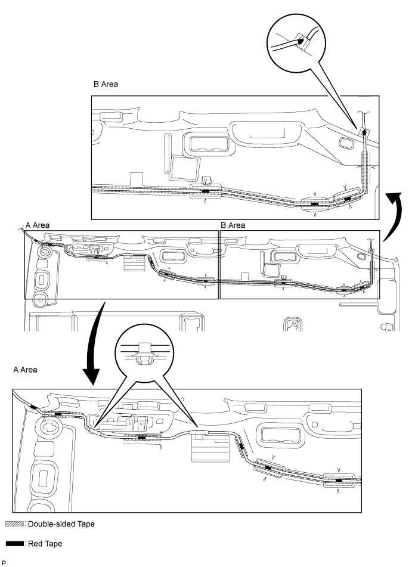
Align the red tape wound around the antenna cord with the V markings on the roof headlining and the notch at the rear of the headlining, and attach the antenna cord to the double-sided tape.
Attach the 2 clamps and fit the antenna into the notch.
w/ Sliding Roof:
Apply new double-sided tape as shown in the illustration.
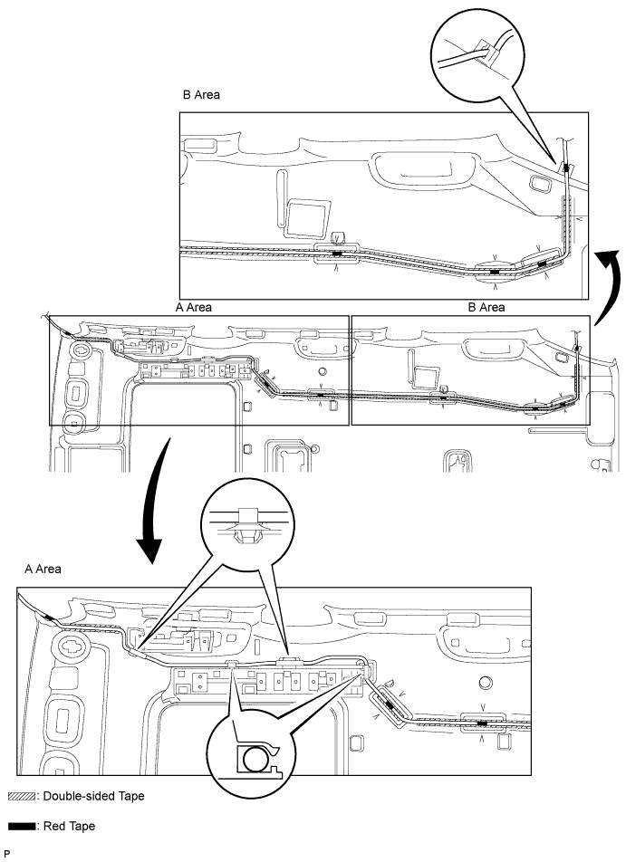
Align the red tape wound around the antenna cord with the V markings on the roof headlining and the notch at the rear of the headlining, and attach the antenna cord to the double-sided tape.
Attach the 4 clamps and fit the antenna into the notch.
| 2. INSTALL NO. 1 ROOF WIRE |
Place double-sided tape along the center of the harness marking and washer marking.
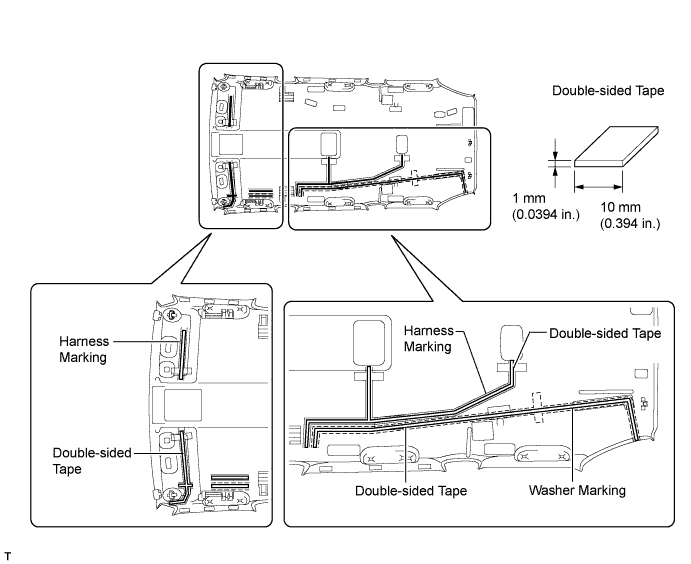
Remove the peeling paper from the double-sided tape while not touching the adhesive side.
Align the triangle mark of the roof wire protector with the V mark of the headlining as shown in the illustration, and then attach the roof wire protector.
Attach each clamp as shown in the illustration.
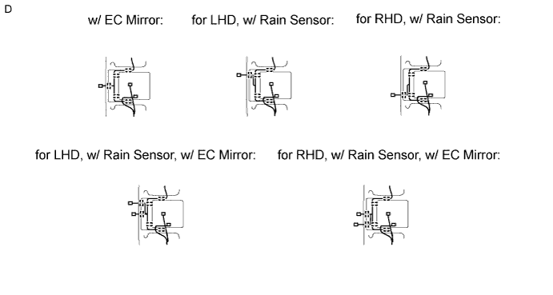
Align the roof wire and washer hose with the V marks of the headlining as shown in the illustration, and attach them to the headlining.
Turn the visor connectors approximately 90° clockwise to install them to the roof headlining.
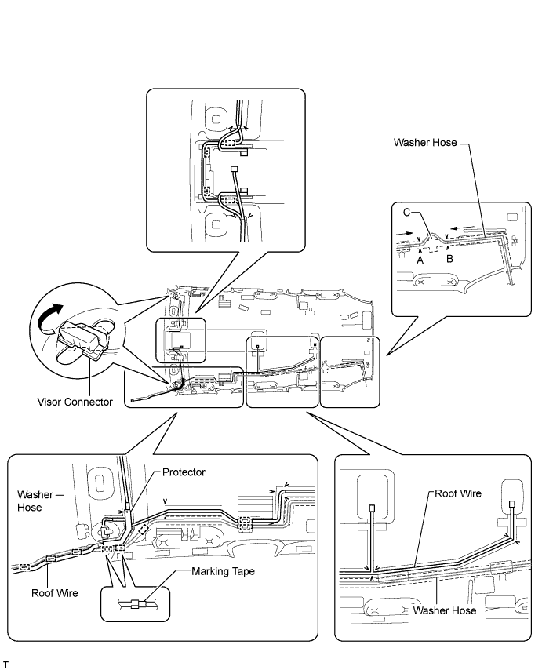
Place tape at the wire harness marking and washer marking locations as shown in the illustration to fix the roof wire and washer hose in place.
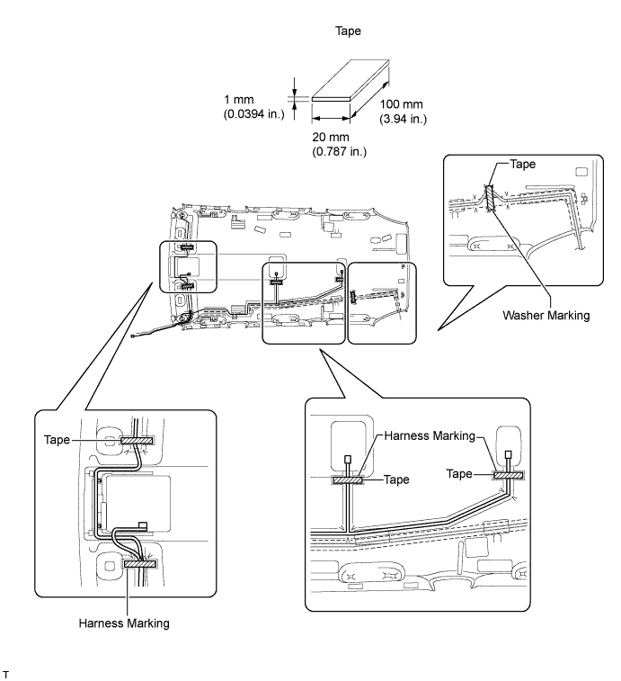
| 3. INSTALL NO. 4 ROOF SILENCER PAD |
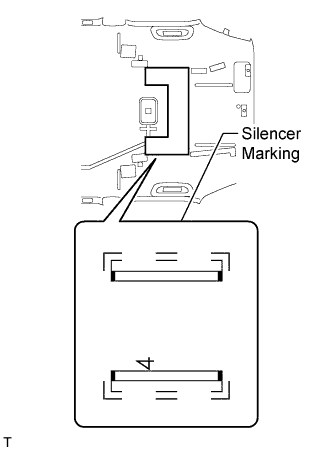 |
Align the silencer marking on the roof headlining with the roof silencer pad and install the pad using double-sided tape as shown in the illustration.
| 4. INSTALL NO. 3 ROOF SILENCER PAD |
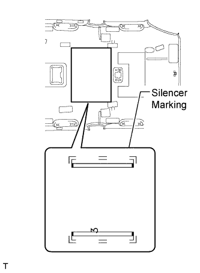 |
Align the silencer marking on the roof headlining with the roof silencer pad and install the pad using double-sided tape as shown in the illustration.
| 5. INSTALL NO. 2 ROOF SILENCER PAD |
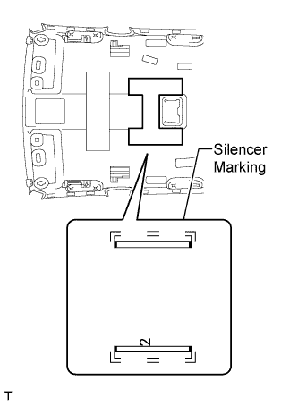 |
Align the silencer marking on the roof headlining with the roof silencer pad and install the pad using double-sided tape as shown in the illustration.
| 6. INSTALL NO. 1 ROOF SILENCER PAD |
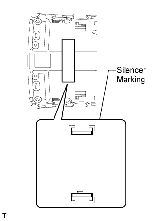 |
Align the silencer marking on the roof headlining with the roof silencer pad and install the pad using double-sided tape as shown in the illustration.
| 7. INSTALL NO. 2 AIR OUTLET GRILLE ASSEMBLY (w/ Rear Air Conditioning System) |
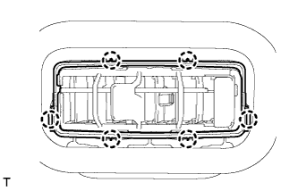 |
Attach the 6 claws to install the air outlet grille.
| 8. INSTALL NO. 1 AIR OUTLET GRILLE ASSEMBLY (w/ Rear Air Conditioning System) |